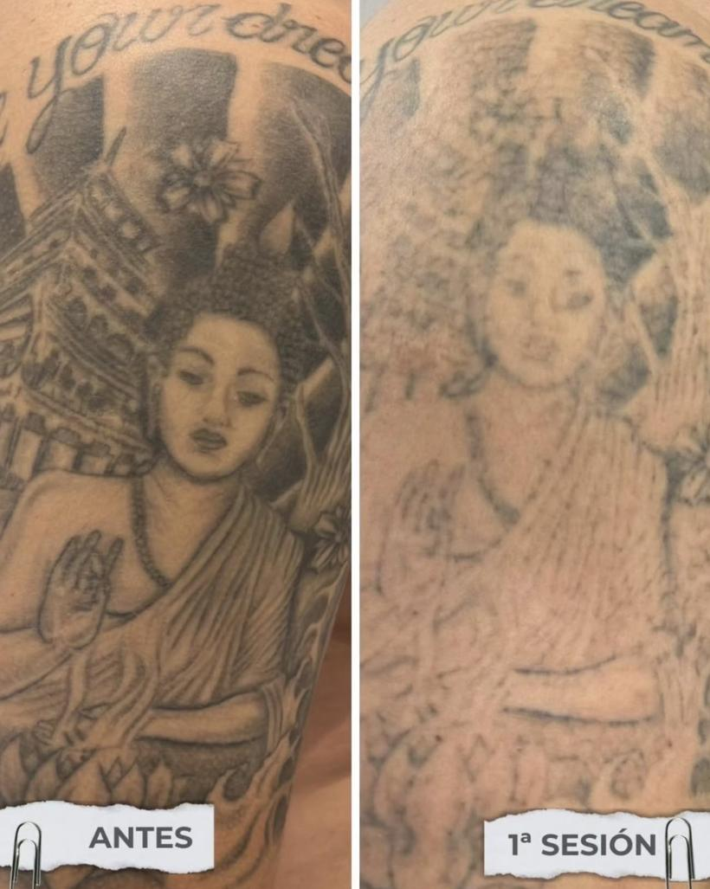
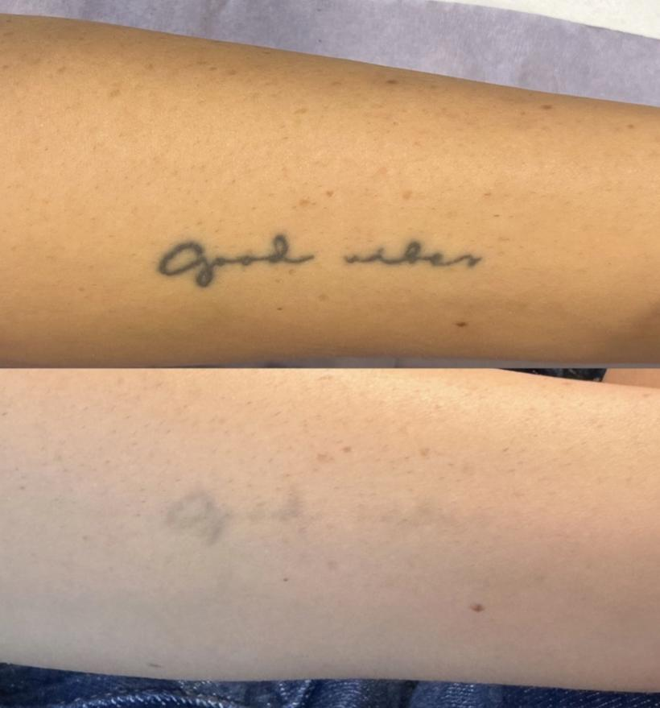
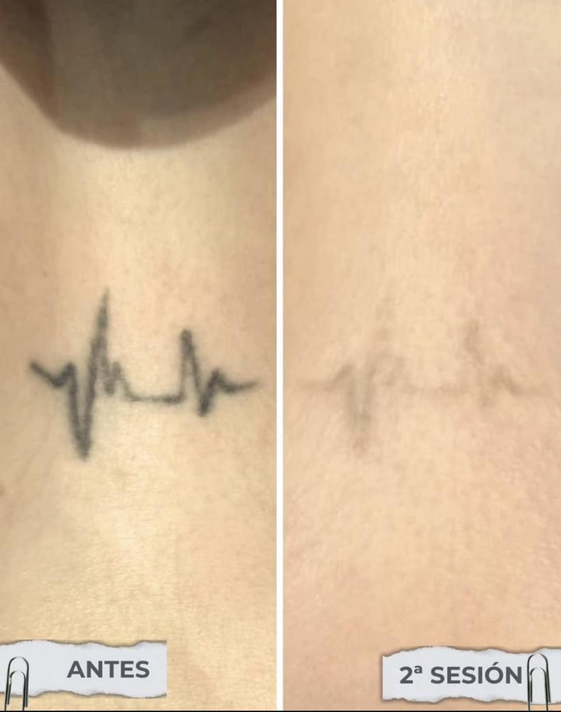
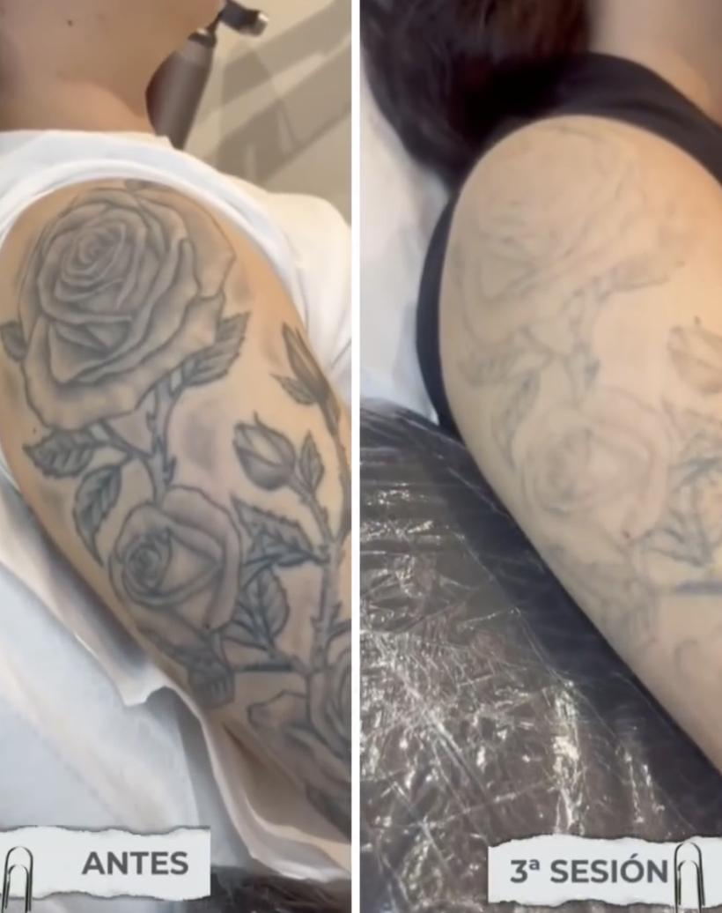
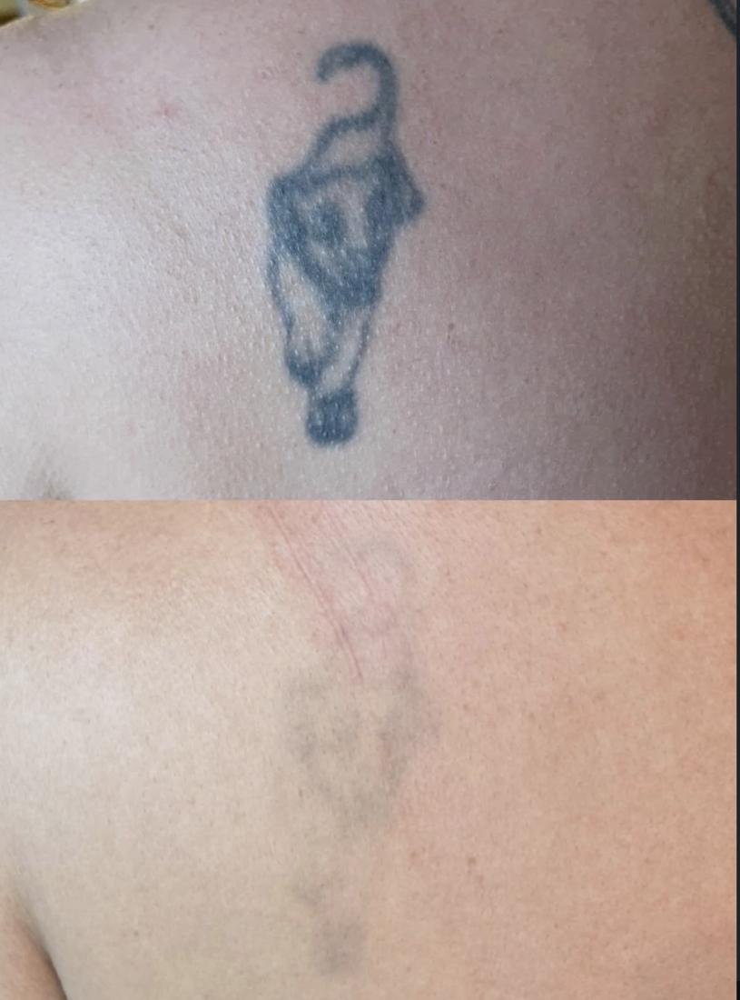
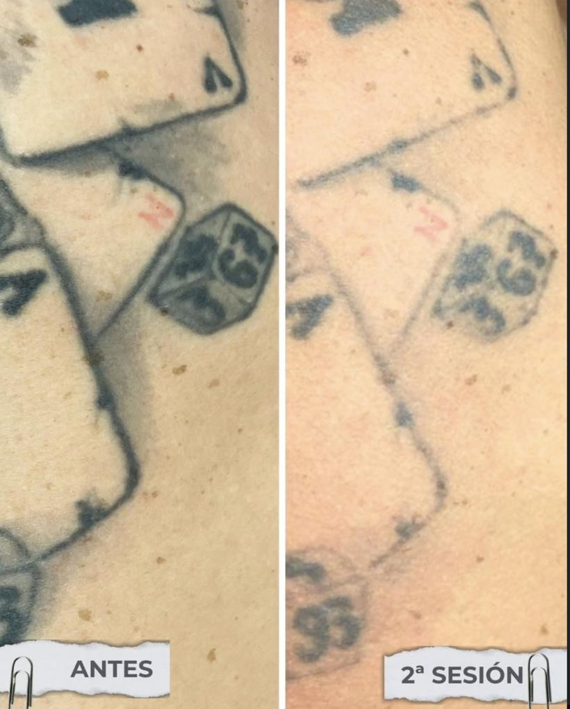
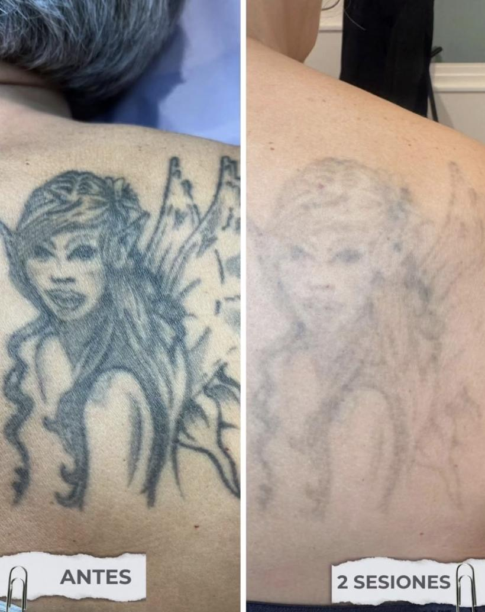
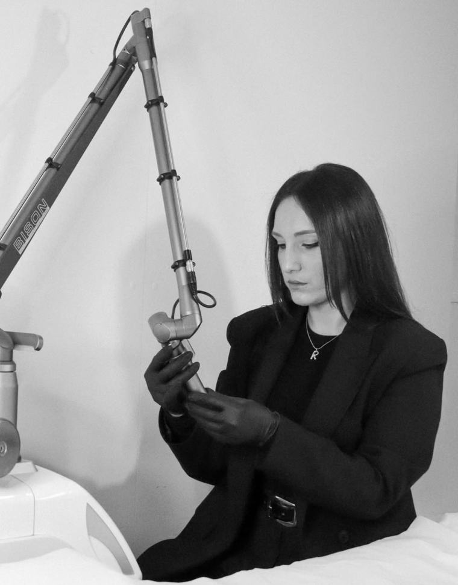

Eliminación completa
Para borrar del todo un tatuaje que ya no quieres llevar, sea negro o de color, pequeño o grande.
Eliminación de tatuajes
Somos el único estudio de Lleida dedicado solo a borrar tatuajes. Desde la primera visita te decimos cuántas sesiones vas a necesitar y cuánto te va a costar.
Lun–Vie 9:00–20:00 · Sáb 9:00–14:00 · 682 81 95 73

Qué hacemos
Para borrar del todo un tatuaje que ya no quieres llevar, sea negro o de color, pequeño o grande.
Aclaramos el tatuaje antiguo para que tu tatuador pueda taparlo con un diseño nuevo y más libre.
Eliminamos o corregimos microblading y micropigmentación de cejas y labios que no quedaron como esperabas.
Cómo funciona
Mándanos una foto por WhatsApp o ven al estudio. Miramos el tamaño, los colores y tu tipo de piel.
Te decimos el precio por sesión y una estimación de cuántas necesitarás, sin sorpresas.
Cada sesión dura pocos minutos. Entre una y otra, tu piel se recupera y tu cuerpo elimina la tinta.
Fotografiamos tu tatuaje en cada visita para que veas cómo avanza.
La tinta, sesión a sesión
No te apuramos: dejamos que tu piel se recupere entre sesiones. Así el resultado es mejor y la piel queda sana. El número de sesiones depende de cada tatuaje.
Resultados
Tatuajes tratados en nuestro estudio de Lleida con el láser Lucid Q-PTP.







Quién te atiende
Especialista en técnicas avanzadas de eliminación de tatuajes.
Marina hace las valoraciones y los tratamientos del estudio. Te explica qué esperar de tu tatuaje y sigue tu caso de principio a fin.
La tecnología
Un láser Nd:YAG Q-switched que rompe la tinta en partículas muy pequeñas para que tu cuerpo las elimine de forma natural.
Trabaja con dos longitudes de onda: 1064 nm para las tintas oscuras y 532 nm para rojos y naranjas. El doble pulso reparte la energía para tratar la tinta cuidando la piel de alrededor.
Precio
Desde 50 €por sesión, según el tamaño y los colores de tu tatuaje
Cada tatuaje es distinto, así que te damos el precio al verlo, por foto o en el estudio. La valoración es gratis y sin compromiso.
Preguntas frecuentes
Depende del tamaño, la cantidad y el color de la tinta, la antigüedad del tatuaje y tu piel. En la valoración gratuita te damos una estimación para tu caso.
Después de cada sesión tu cuerpo necesita tiempo para eliminar la tinta, y tu piel, para recuperarse. Respetar ese tiempo da mejores resultados y protege la piel.
Se nota, y cada persona lo vive de forma distinta. Las sesiones son cortas y te explicamos cómo prepararte.
Sí. El negro y los colores oscuros son los que mejor responden. Los rojos y naranjas se tratan con la longitud de onda de 532 nm. Algunos colores, como ciertos verdes o azules claros, pueden necesitar más sesiones: los verdes y los azules claros son los más difíciles de eliminar.
Siguiendo los cuidados, la piel queda perfecta. Antes de empezar valoramos tu piel y te damos las pautas para después de cada sesión.
Desde 50 € por sesión, según el tamaño y los colores. Mándanos una foto por WhatsApp y te damos el precio de tu tatuaje.
Contacto
Te respondemos por WhatsApp con una primera valoración y el precio por sesión.
Atendemos a clientes de Lleida, Balaguer, Mollerussa, Tàrrega, Fraga y alrededores.